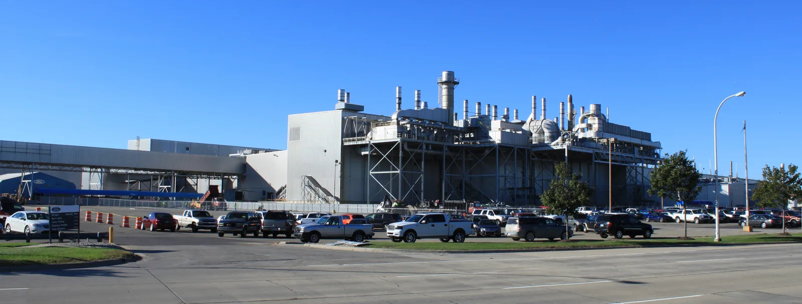
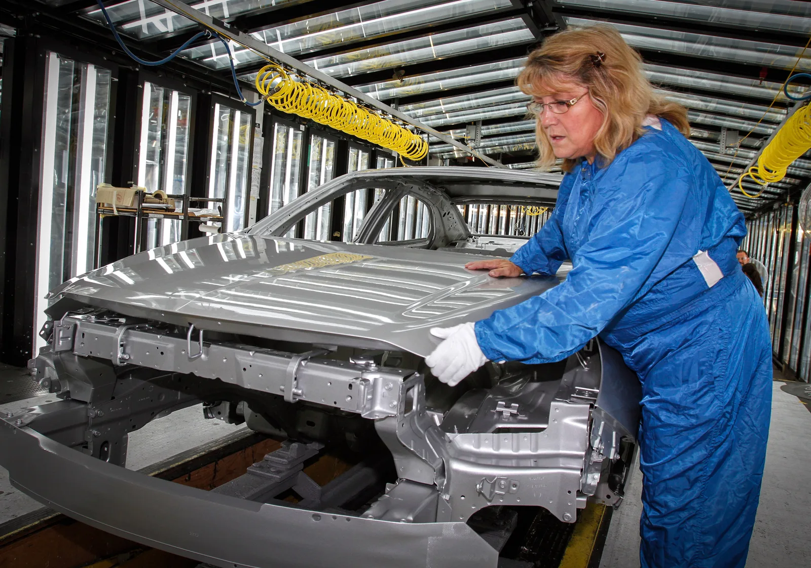
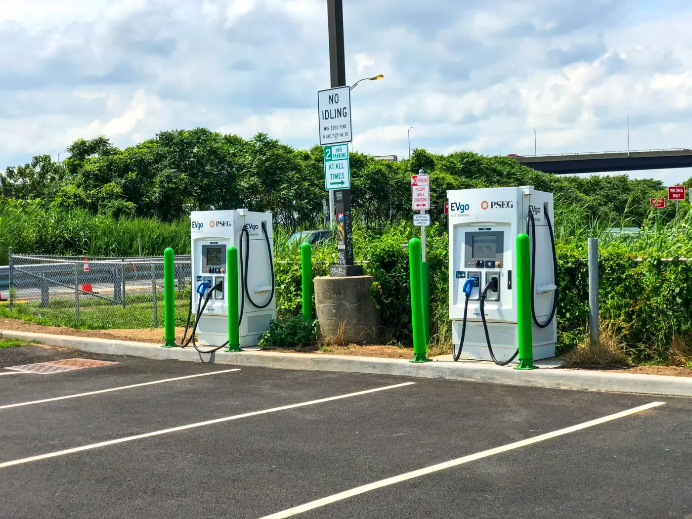

▲ 트럼프 행정부의 새 연비규제안은 오바마·바이든 정부가 쌓아온 CAFE 기준을 정면으로 되돌린다 ⓒ Wikimedia Commons (Noclip, Public Domain)
트럼프 대통령이 2026년 9월 26일(현지시간) 백악관 행사에서 새 연비규제 개편안을 승인했다고 밝혔고, 이어 9월 28일 연방정부가 구체적인 CAFE(Corporate Average Fuel Economy·기업평균연비) 기준안을 공식 발표했다. 이번 조치의 핵심은 단순한 수치 조정이 아니다. 바이든 행정부가 2024년 확정한 '2031년까지 평균 연비 50.4mpg' 목표를 사실상 무력화하고, 전기차 판매 비중을 계산에서 아예 제외하는 방식으로 규제의 틀 자체를 바꿨다.
1. 정확히 무엇이 바뀌나 — 숫자로 보는 CAFE 개편
이번 개편의 정식 명칭은 'SAFE Vehicles Rule III'다. 2020년 트럼프 1기 행정부가 내놨던 SAFE Vehicles Rule의 후속 격으로, 모델연도 2022~2031년 승용차·소형 트럭에 적용되는 CAFE 기준을 다시 짠다.
| 구분 | 2031년 목표 연비 | 연간 상승률 |
|---|---|---|
| 바이든 행정부(2024년 확정) | 약 50.4mpg | 2024·2025년 8%, 2026년 10% |
| 트럼프 행정부(2026년 신안) | 약 34.5mpg | 승용차 기준 연 0.25~0.5%대 |
📍 왜 34.5mpg인가 — '2022년 기준선으로 리셋'
NHTSA(미국 도로교통안전국)는 이번 개편을 "전기차와 크레딧 거래를 고려하지 않고 설계된 2022년 기준선으로 되돌리는 리셋"이라고 설명한다. 즉 그동안 완성차업체들이 전기차 판매로 확보해온 '초과 달성분(크레딧)'을 규제 설계에서 빼고, 순수하게 휘발유·디젤차의 엔진·구동계 개선만으로 달성 가능한 수준으로 목표치를 다시 낮춘 것이다.
트럼프 행정부의 개편 취지는 교통부가 공개한 팩트시트에서 직접 확인할 수 있다. 美 교통부 "Freedom Means Affordable Cars" 팩트시트 바로가기

▲ 완화된 기준은 내연기관·하이브리드 생산 비중이 높은 미국 공장들에 숨통을 틔워줄 것으로 보인다 ⓒ Wikimedia Commons (Dwight Burdette, CC BY 3.0)
2. 왜 지금 바꾸나 — 전기차 전환 속도조절과 업계 로비
표면적인 명분은 '소비자 부담 완화'다. 트럼프 대통령은 이번 조치로 신차 가격이 낮아지고 소비자가 원하는 차종(대형 SUV·픽업트럭 포함)을 더 자유롭게 살 수 있게 된다고 주장했다. 백악관 측은 이번 개편으로 소비자가 신차 구입과 연료비에서 상당한 비용을 아낄 수 있다고 설명한다.
✅ 개편 배경으로 꼽히는 요인들
· 전기차 판매 둔화 — 미국 내 전기차 세액공제 축소·인프라 부족 속에 수요 성장이 예상보다 더딘 상황
· 완성차 업계의 지속적 요구 — GM·포드·스텔란티스 등은 바이든표 기준이 비현실적으로 가파르다고 지속 주장해옴
· 정책 기조 전환 — 트럼프 행정부는 전기차 의무화 대신 소비자 '선택권'을 규제 설계의 핵심 가치로 내세움
· 2020년 SAFE Vehicles Rule의 연장선 — 트럼프 1기 때도 오바마표 기준을 낮춘 전례가 있어, 이번 조치는 '되돌리기의 재현'에 가까움
3. 美 완성차 3사 환영… 현대차·기아는 '하이브리드 전략'에 힘
발표 당일 백악관 행사에는 포드 짐 팔리 CEO와 스텔란티스 안토니오 필로사 CEO가 직접 참석했고, GM도 대표단을 보냈다. 짐 팔리 CEO는 "연비 기준을 시장 현실에 맞춘 트럼프 대통령의 리더십에 감사한다. 고객에게 선택권을 주면서도 탄소 배출과 에너지 효율에서 실질적 진전을 이룰 수 있다"고 밝혔다. 발표 이후 GM과 스텔란티스 주가는 각각 약 3%, 포드는 약 1% 상승했다.

▲ GM·포드·스텔란티스는 새 기준이 생산 계획의 유연성을 높여준다며 환영했다 ⓒ Wikimedia Commons (Susan G. McSpadden / GM Media, CC BY 3.0)
한국 업체인 현대차·기아 입장은 결이 조금 다르다. 두 회사는 최근 몇 년간 전기차 올인 전략에서 하이브리드 비중 확대로 무게중심을 옮겨왔다. 미국 조지아주 메타플랜트 아메리카에서는 아이오닉5·아이오닉9 등 전기차와 함께 기아 스포티지 하이브리드를 비롯한 하이브리드 모델 현지 생산도 확대하는 중이다.
📍 연비규제 완화가 현대차·기아에 미치는 의미
연비 기준이 낮아지면 완성차업체가 규제를 맞추기 위해 전기차 판매 비중을 억지로 끌어올려야 할 유인이 줄어든다. 이미 하이브리드 중심으로 포트폴리오를 다변화해온 현대차·기아 입장에서는 오히려 전략 전환의 명분이 강화되는 측면이 있다는 평가가 나온다. 다만 장기적으로 미국 내 전기차 인프라·수요 성장이 더뎌질 경우, 이미 투자된 미국 전기차 생산라인의 가동률 관리 부담은 남는다.
4. 환경단체·정치권 반발 — "기후 목표 후퇴, 석유업계만 이득"
환경단체들은 이번 조치를 강하게 비판했다. 한 환경단체 관계자는 "트럼프의 이번 조치는 미국의 파괴적인 석유 의존을 부추기는 동시에, 중국 등 외국 완성차와의 '그린테크 경쟁'에서 우리 스스로 발목을 잡는 일"이라고 지적했다. 온실가스 감축 목표 달성이 사실상 불가능해진다는 우려도 나온다.
✅ 반발 여론의 핵심 논거
· 기후 목표 후퇴 — 자동차 부문은 미국 온실가스 배출의 주요 원인 중 하나로, 완화된 기준은 배출 감축 속도를 늦춘다는 지적
· 글로벌 경쟁력 우려 — 중국 등이 전기차·배터리 기술 투자를 지속하는 사이 미국 업계의 전환이 늦어질 수 있다는 우려
· 정치권 반발 — 일부 민주당 의원들은 행정부에 개편안 철회를 공개적으로 요구
· 연료비 절감 효과에 대한 반론 — 단기적으로 신차 가격은 낮아질 수 있으나, 장기적으로는 연비가 낮은 차량 보유에 따른 소비자의 연료비 부담이 늘어날 수 있다는 지적

▲ 환경단체는 이번 조치가 전기차 전환에 필요한 시장 유인을 약화시킬 것이라고 우려한다 ⓒ Wikimedia Commons (Bonnachoven, CC0)
5. CAFE 기준, 이렇게 흔들려왔다 — 오바마부터 트럼프 2기까지
CAFE 기준은 1975년 오일쇼크 이후 도입된 이래, 정권이 바뀔 때마다 방향이 뒤집혀 온 대표적인 '정치화된 규제'다.
| 시기 | 주요 내용 |
|---|---|
| 오바마 행정부(2011~2016) | 2025년까지 평균 연비를 약 54.5mpg로 두 배 가까이 끌어올리는 목표 설정, 연 5%대 상승률 요구 |
| 트럼프 1기(2020) | 'SAFE Vehicles Rule'로 2021~2026년 기준을 완화, 연 1.5%대 상승률로 하향 |
| 바이든 행정부(2021~2024) | 2024·2025년 8%, 2026년 10% 상승 요구로 재강화, 2031년 50.4mpg 목표 확정 |
| 트럼프 2기(2025~2026) | 'SAFE Vehicles Rule III'로 2022년 기준선 리셋, 2031년 목표를 약 34.5mpg로 재하향 |
📍 널뛰는 기준, 업계에는 '불확실성'이 더 큰 문제
완성차업체 입장에서는 기준이 강화되든 완화되든, 정권마다 목표치가 크게 바뀌는 것 자체가 장기 투자 계획을 어렵게 만드는 요인이라는 지적도 나온다. 전기차 생산라인처럼 수년에 걸쳐 대규모 투자가 필요한 사업은 규제 방향이 4~8년 주기로 요동칠 때마다 투자 회수 계획을 다시 짜야 하는 부담을 안는다.
6. 요약
트럼프 행정부가 2026년 9월 28일 공개한 새 CAFE 기준안은 2031년 목표 연비를 바이든표 50.4mpg에서 약 34.5mpg로 낮추고, 연간 상승률도 0.25~0.5%대로 크게 줄였다. 전기차의 환산 연비를 기준 설정에서 제외해, 완성차업체가 전기차 판매를 늘리지 않아도 규제를 맞출 수 있는 구조로 바뀐 것이 핵심이다.
GM·포드·스텔란티스는 이번 조치를 환영했고, 발표 직후 관련 주가도 상승했다. 반면 환경단체와 일부 정치권은 기후 목표 후퇴이자 글로벌 친환경차 경쟁력 약화라며 강하게 반발하고 있다. 이미 하이브리드 중심 전략으로 방향을 틀어온 현대차·기아 입장에서는 상대적으로 충격이 제한적이라는 평가가 나오지만, 장기적으로 미국 내 전기차 인프라·수요 성장 속도가 더뎌질 가능성은 여전히 변수로 남는다.
CAFE 기준은 오바마·트럼프 1기·바이든·트럼프 2기를 거치며 정권마다 방향이 뒤집혀온 대표적인 정치화된 규제다. 이번 개편 역시 다음 정권에서 다시 강화될 가능성을 배제할 수 없어, 완성차업계의 '규제 불확실성'은 당분간 계속될 전망이다.